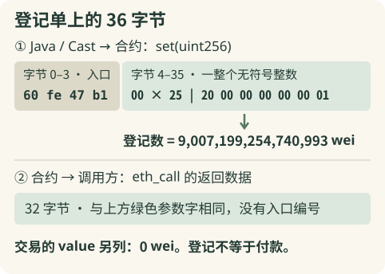

本页目录
两格都先别勾。36 字节的前 4 字节是在选「填金额」这个操作，后 32 字节才是要填的数；试算只返回数，不用再报操作名。试算完查登记栏仍是 0。等同一份指令真正入块，再查当块登记栏是原数，才勾「已登记」。看另一栏：随交易转入的金额是 0 wei，所以这次登记不是收款。
只改填进去的数。 工单原文不变，网页把整数先转成浮点数，指令末字节从 01 变为 00。若执行成功，能签「按单登记」吗？不能。读回的是 9007199254740992，比工单少 1 wei；转入额依然是 0。成功回执不会替财务核对这两个栏位。
只阅读可去第 14 课看一笔钱什么时候才真正锁入托管。以下是选做实操：检查指令字节、比较试算结果，再查入块后的登记栏。
先修是第 09 课的账户状态和第 11 课的交易与回执：会区分交易的 to、value、input 和回执的 status 即可。这里 wei 是单据的约定单位，1 ETH = 10¹⁸ wei；uint256 本身并不附带单位。全课只用自己启动的本地链，不使用钱包文件、私钥或公网 RPC。
先把工单写成两个入口
AmountRegister.sol 只有一个持久状态 uint256 private amountWei，部署后默认为 0。它是可被下一次写入覆盖的实验登记栏，不是历史流水，也不是任何人的欠款余额。
function set(uint256 nextWei) external returns (uint256) {
amountWei = nextWei;
return nextWei;
}
function get() external view returns (uint256) {
return amountWei;
}
set 把值写进这个合约自己的存储，再把传入值返回给调用方；get 是不改状态的读取入口。external 说明这是合约对外提供的函数，不等于有写入权限控制。任何调用者都可以覆盖这张练习单。private 限制的是 Solidity 源码层面的访问，不会对读链的人保密。两个入口都没有标 payable，不接收调用随附的非零原生金额。本课写交易的 value 始终为零，发交易的测试账户仍需支付执行费。
Java 的 register.set(n) 看起来像一次本地方法调用，参数有静态类型，返回值交给当前线程。跨到合约边界后，地址选定哪份部署，输入字节选定哪段代码和哪些实参，调用还有发送者、附带金额和 gas 预算。另一个合约调用它时，当前调用帧的 msg.sender 是直接调用者，不一定是最初发交易的人。调用可能回滚；客户端向节点提交写交易拿到的是交易哈希，不是一个 Java BigInteger 返回值。
拆开两端都必须同意的 36 字节
ABI 是应用二进制接口：它规定输入和输出如何排成字节，却不会把类型名称或 wei 字样塞进每个值。同一串字节按不同接口解码，可能得到看似合理但无关的结果。先拿到目标部署对应的接口，再谈「解出来了」。
- 选入口。取规范签名
set(uint256)（不加空格、参数名或返回类型），用 Keccak-256 哈希，取最左 4 字节：60 fe 47 b1。uint在规范签名里要展开成uint256。这个 selector 是分发线索，不证明地址、合约身份或调用者权限；四字节并非全球唯一。 - 编实参。单个
uint256是一个 32 字节无符号大端字，左侧补零。9007199254740993 = 2⁵³ + 1，对应末尾 7 字节20 00 00 00 00 00 01，前面补 25 个零字节。这里0x是十六进制文本前缀，不算字节。 - 拼输入、拆输出。
set的输入是 selector 加参数字，4 + 32 = 36字节；节点模拟执行时返回的只有32字节结果，没有第二个 selector。动态bytes、字符串或数组还有偏移与长度规则，不能把「每个参数就填一个字」照搬过去。


默认工单的完整预期字节，可逐位和终端输出比对：
calldata = 0x60fe47b10000000000000000000000000000000000000000000000000020000000000001
return = 0x0000000000000000000000000000000000000000000000000020000000000001
哪一份数据会留到下一次调用？
| 位置 | 在这个例子里是什么 | 生命周期与误判 |
|---|---|---|
| calldata | 调用帧只读输入；set 的前 4 字节分派，其余按 ABI 读为 nextWei |
一次执行中不能改写这份输入。外部交易的输入也会被记录，但不会自动成为合约状态；标量参数不需要在源码上写 calldata |
| memory | 当前调用帧的临时工作区，例如组装要交出的返回数据 | 不是全局 Java 堆，后一次调用没有前一次的临时对象；返回数据交给调用方不表示保存到了链上 |
| storage | 当前地址的持久状态；本例只有 amountWei，按此布局占 0 号槽 |
写交易成功入块后，后续调用可从新状态读取；模拟和回滚都不会提交这次修改。换一份合约或布局，不要照猜 0 号槽 |
如果下节要把「单个金额」改成「每个地址的应领额」，会用到 mapping(address => uint256)。给定键和映射的存储槽，编译器能推导对应值的位置；它不像 Java 的 Map 那样还维护可遍历的键集合，没有 .size() 或 .entrySet()。未写过的键和写过零的键都能读到 0。需要知道「出现过哪些收款人」时，要另行设计索引（例如从事件建立查询列表）；不能循环扫 mapping 来证明没有遗漏。
全卷工具准备：先下载并核验，随后断网构建
在仓库根目录、同一个终端内操作。需要 Bash、Python 3.11+ 标准库、lsof、JDK 17+（java 和 javac 都可用）。安装器支持 macOS arm64 / x86_64、Linux x86_64，下载时还用到 curl、tar、awk 和 openssl。不需要 sudo、Docker、Node.js、Maven 或第三方 Solidity 库。首次取工具要联网；没有本机适配的二进制或摘要不匹配就停，不从随机镜像补一个不同版本。
bash labs/m04/setup.sh
export PATH="${XDG_CACHE_HOME:-$HOME/.cache}/chain-course/m04/bin:$PATH"
export FOUNDRY_SOLC="${XDG_CACHE_HOME:-$HOME/.cache}/chain-course/m04/bin/solc"
unset ANVIL # 让回环启动器也选择上面 PATH 中的 anvil
command -v forge cast anvil lsof
forge --version
cast --version
anvil --version
"$FOUNDRY_SOLC" --version
java -version
javac -version
python3 --version
(cd labs/m04 && forge build --root . --offline src/AmountRegister.sol)
前三个 Foundry 工具应为 1.7.1，编译器应含 0.8.28+commit.7893614a。安装器把三个指定平台归档的 SHA-512 和编译器的 SHA-256 与脚本固定的摘要逐一比对，再将二进制放入本机缓存。来源可核对 Foundry v1.7.1 发布记录与 Solidity 编译器的二进制及校验说明；摘要一致不等于证明这些程序没有缺陷。
这就是本卷的编译器预热：离线前已取得可执行的 solc，FOUNDRY_SOLC 直接指向它；不靠第一次 forge build 临时联网选版本。foundry.toml 固定 Cancun、启用优化且 optimizer_runs=200。最后一条命令成功，才表示当前终端能用指定编译器构建；仅有 .sol 或旧产物不是证据。换终端时重新导出这两个变量；缓存还在则不必重新下载。第 14–16 课沿用同一工程。
先不启节点：两套编解码器交叉读
从根目录执行。Java 用源文件模式直接运行 AmountAbi.java，Cast 按同一份接口独立编码，两者没有互调：
n=9007199254740993
cast sig 'set(uint256)'
j=$(java labs/m04/AmountAbi.java encode "$n")
c=$(cast calldata 'set(uint256)' "$n")
printf 'Java %s\nCast %s\n' "$j" "$c"
test "$j" = "$c" && echo '36 bytes match'
java labs/m04/AmountAbi.java decode-call "$c"
cast decode-calldata --json 'set(uint256)' "$j"
cast sig 的预期输出是 0x60fe47b1。Java 只为这个固定接口保存这一个常量，用指定版 Cast 校准；改签名必须重新校准。不要用 JDK MessageDigest.getInstance("SHA3-256") 代替以太坊的 Keccak-256，两者的填充不同。encode 直接将十进制文本读入 BigInteger，先检查非负且不超过 256 位，再补足 64 位十六进制数字；解码检查 selector 和精确长度，以 new BigInteger(1, word) 明确按无符号数读。它不是通用 ABI 库。两次交叉解码都应还原原数；Cast 的 JSON 是单元素数组，不是额外一个参数。
为什么原工单会少 1？本例能放进 Java long，不能用 double 或 JavaScript 的 Number 精确表示：2⁵³ 附近相邻的较大浮点整数相隔 2，2⁵³ + 1 按最近偶数规则舍入成 2⁵³。若先舍入再交给两套编解码器，它们会忠实编出同一个错数，这时逐字节相等也救不回原单。保留上游十进制原文，跨 JSON 边界优先用字符串表示金额；端到端最后还须对原单。反过来，BigInteger 不受 256 位限制，不能直接把 toByteArray()（有符号、变长）原样拼进去。Solidity 0.8 的普通算术默认检查溢出，但显式缩窄如 uint64(n) 会丢掉高位；例如 2⁶⁴ + 1 缩窄后是 1，不会自动替你拒单。
发同一份字节：先模拟，再入块读槽
仍从根目录运行 一键对照程序。它在临时目录编译 Java 类、离线构建合约，借用回环启动器开一条新的 127.0.0.1:18613 链（chainId 31337，Cancun，临时解锁测试账户，自动挖块）；不接受外部地址参数。端口已占用就先协调释放，不连接旧服务。
python3 labs/m04/abi_lab.py
跟着一份 setter 请求看三个不同的结果：
- 模拟的返回数据。 程序从部署回执取得地址，把同样的
from、to、data、value=0交给eth_call，在部署块状态上执行set。这是模拟，不是强制函数只能view，临时写入不会提交。将节点实际返回的同一串字节分别交给decode-result和cast decode-abi --json 'set(uint256)(uint256)'（默认解输出）。两边都应解出 9007199254740993，再调get()却仍读到 0。 - 入块交易的回执。 程序现在发送同一个
data，取得哈希，再等状态为 1 的回执，并按哈希取回交易、核对input和value。普通交易回执没有set的 Solidity 返回值；不能把刚刚模拟的返回数据冒充交易回执。若模拟与入块之间已有其他写入，两次执行的起始状态也可能不同。 - 入块后的状态。 在回执指定高度
eth_call(get)，应读回登记金额。按本合约已知布局读同块的 0 号槽，应与上面的 32 字节结果完全一致。最后eth_getBalance(合约地址, 同一高度)应读到 0 wei。所以这张单能确认登记，不能作收款证明。
默认输入的预期关键字段如下；… 表示省略本轮地址或哈希，提交日志时不要省略：
INPUT java_wei=9007199254740993 cast_wei=9007199254740993
DEPLOY chain_id=31337 address=… tx=…
RETURN data=0x0000000000000000000000000000000000000000000000000020000000000001 java_wei=9007199254740993 cast_wei=9007199254740993
SIMULATION stored_wei=0
MINED tx=… block=2 block_hash=… status=1 value_wei=0
STATE get_wei=9007199254740993 slot0=0x0000000000000000000000000000000000000000000000000020000000000001 contract_balance_wei=0
排查「少 1 wei」从原单而不是从回执开始：对准 CALLDATA 两行，前 4 字节决定是不是同一个填表操作；即使两行逐字节相同，也要把 INPUT 解出的整数与工单原文比。若两端都读成末位 2，错数在上链前就已进入指令。若 RETURN 是原数而 SIMULATION stored_wei=0，这不叫丢数据：前者是试算答案，后者是试算后未改变的登记栏。只有拿 MINED 的块号和本次部署地址定位 STATE，才能核对真正存下来的数；contract_balance_wei 才是合约当时持有的原生金额。
只改金额：超出一个字，还能登记吗？
把 --amount-wei 从原单改成 2²⁵⁶；这是超上界一个单位，不是可编码的 32 字节零。其余条件不动：
n=$(python3 -c 'print(1 << 256)')
if python3 labs/m04/abi_lab.py --amount-wei "$n"; then rc=0; else rc=$?; fi
printf 'exit=%s\n' "$rc"
预期 STOP wei outside uint256、exit=2，且没有 DEPLOY 或 MINED。这是 Java 在编码前的拒绝，不是合约回滚。截取末 64 位十六进制数字虽然能凑够长度，却会变为零，业务含义完全不同。相反，确实输入 --amount-wei 0 是合法的零值登记；这种输入即使交易成功，前后状态数值也可能相等。
独立作业：最高位是 1，不是负号
新的工单要求登记 2²⁵⁵ + 9 wei，仍然不是付款。不要沿用默认输出：先给出你预期的 selector、32 字节参数的首尾字节、模拟后的存储、入块后合约余额，再运行并保存证据：
n=$(python3 -c 'print((1 << 255) + 9)')
python3 labs/m04/abi_lab.py --amount-wei "$n" > abi-homework.log && cat abi-homework.log
交一份工具版本与实际日志，包含两套完整 CALLDATA、两次解码、回执哈希与区块、STATE。判据：selector 不变，参数首字节 80、中间 30 个 00、末字节 09；两端应解出同一个正整数 57896044618658097711785492504343953926634992332820282019728792003956564819977。模拟后存储为 0，成功入块后 getter 和槽 0 表示原数，合约余额仍为 0。若 Java 解成负数，先查是不是用了单参数的 new BigInteger(byte[])。最后回答交班问题：「只有一份 status=1 的凭条，能签字说收到了这么多 wei 吗？」不能；这份交易的 value 为零，改变的是登记栏。
查证原文
- Solidity 0.8.28 ABI 规范：规范签名、参数大端编码、静态类型与返回值布局。
- Solidity 类型与数据位置、映射的槽位计算：区分只读输入、帧内临时区与持久槽。
- Cast 输入解码、Cast 输出解码：一个要求保留 selector，另一个默认按函数返回字段解释。
- Java 17 BigInteger、Ethereum JSON-RPC：eth_call：核对带符号构造器，以及模拟执行与发送交易的区别。